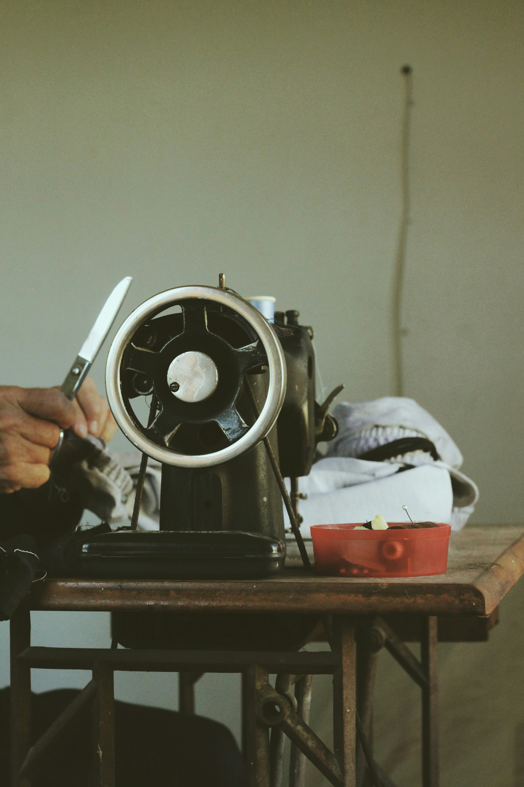

Regina Wanjiru's Journey
Born and raised in Nakuru, Regina discovered her passion for tailoring at a young age. She would watch her mother sew beautiful garments and quickly developed a fascination for transforming fabrics into wearable art.
After completing her formal education at Nakuru Tailoring Institute, Regina worked with several established fashion houses in Kenya before deciding to start her own business in 2013.
"I wanted to create a space where clients could get personalized attention and garments that truly fit their personality," says Regina. "That's how Regina's Stitch Haven was born."